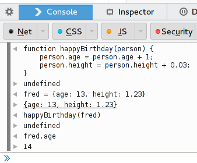

Also know as: Making Time Machines.
To understand how variables, loops and functions work in JavaScript we wrote a series of small scripts that explain those concepts.
For example, at first we simply counted up, then down,
then we counted ages, not numbers, then we wrote the
happyBirthday function and then we almost
had our time machine.
You can try it for yourself.
<canvas>Playing around with the HTML Canvas element as a first introduction to JavaScript and combined with the ability to draw stuff
There is a live version of it or you can play around with it yourself.